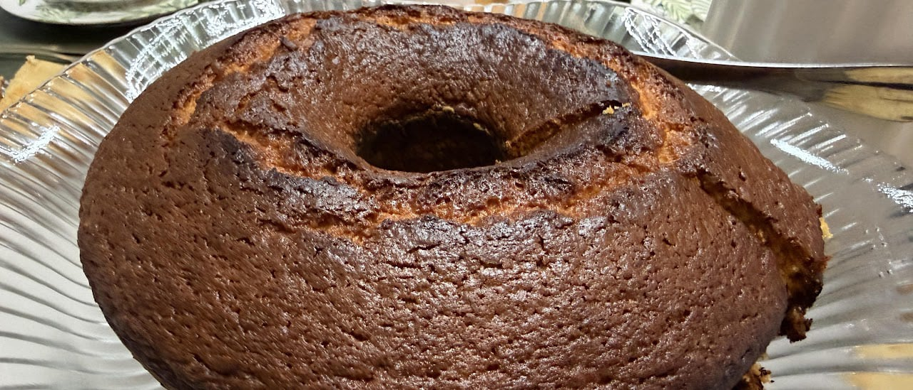

Free AI Website Software
I’ve been reflecting on why I give gifts the way I do, and why sometimes those gifts don’t land as I intend. What I’m sharing here isn’t a defense. It’s an attempt to let you see how I was shaped, what I value, and how I want to grow.
I grew up in a house with 13 people. Scarcity wasn’t an occasional inconvenience—it was the daily backdrop. We counted toilet paper squares. If there was no icing for a cake, mustard might be the substitute, and you were grateful for the cake. That kind of environment trained me to see any gesture, any offering, as meaningful in itself. Precision didn’t matter. Gratitude did.
Because of that, I never developed the instinct to expect exactness. If someone gives me something unexpected, even if it’s far from what I’d choose for myself, my reflex is gratitude. I notice the gesture, not the mismatch. That mindset is deeply ingrained.
So when I give a gift—whether it’s something practical, quirky, or unexpected—it’s my way of saying “I was thinking of you.” I’m not trying to control. I’m trying to share something good.
I’ve realized I view “knowing” a person differently than some of you might. I don’t believe anyone fully knows anyone else—not even themselves. I certainly don’t fully “get” myself. I think we’re all in motion. Tastes change. Preferences shift. Some of your favorites now weren’t your favorites years ago, and they won’t stay fixed forever.
For me, discovery is part of love. Trying something new, being surprised, changing your mind—that’s living. That’s why I’ve never put much weight on memorizing a fixed set of personal preferences. To me, they’re temporary coordinates, not permanent markers.
But I’m starting to understand that for some of you, when a gift misses the mark, it’s not just about the object. It can feel like evidence that I wasn’t listening, or that I don’t “know” you well enough. I’ve often missed that emotional layer because I don’t experience gifts that way myself.
I’m learning that intention and impact can diverge. My intention has always been to show care. But the impact sometimes feels to you like I’ve overridden your voice. I can see how that happens, especially if I substitute my idea for something you’ve clearly mentioned.
I also see that expecting everyone to share my philosophy about change and discovery is unrealistic. Different upbringings create different emotional codes. Scarcity taught me one code; abundance and personal choice may have taught you another. Neither is wrong. But they don’t automatically sync.
Here’s what I’m working on:
• When you ask for something specific, I’ll do my best to give exactly that. No substitutions.
• To support my memory, I may ask for a shared, evolving list. That way, I can stay thoughtful without relying on recall months later.
• When I give a surprise, I’ll frame it as just that—a gesture, not a fulfillment.
• I’ll keep my spirit of discovery, because that’s part of who I am. But I’ll also respect that precision matters to some of you, especially when it comes to feeling “known.”
And here’s what I hope for:
That you’ll understand the history behind my actions. That you’ll see my gifts not as careless replacements but as personal attempts at connection. And that maybe, sometimes, you’ll allow space for surprise—not as a test of whether I listened perfectly, but as an opening to discover something new together.
Free AI Website Software